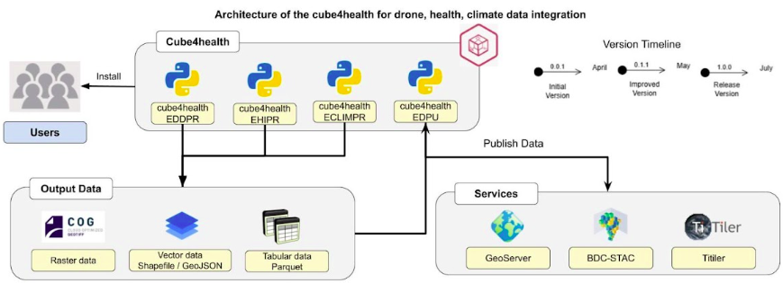
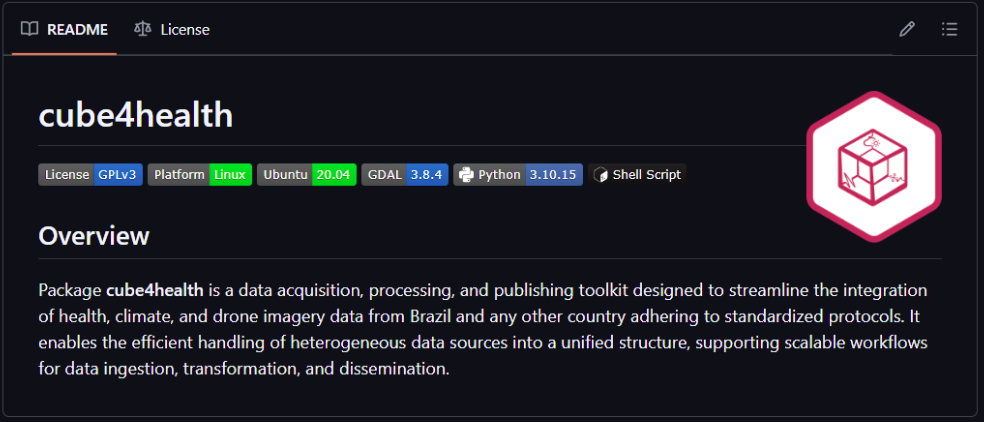
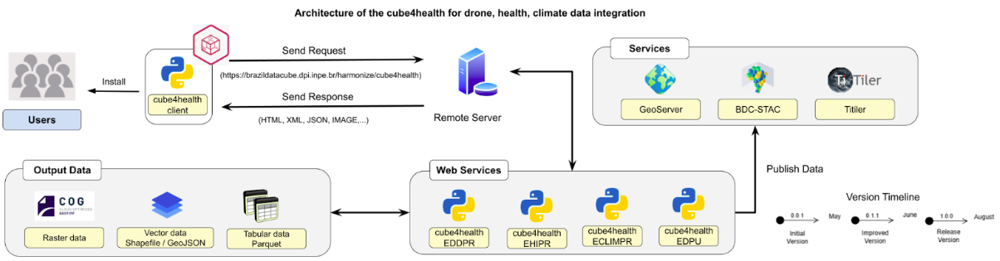

Cube4health - Package and Service
Currently, we have a set of algorithms and packages specifically developed for processing drone (module 1), health (module 2), and climate (module 3) data to enable the visualization and analysis based on our technical-scientific concept (HARMONIZE Instance). These data are published using Geoserver, BDC-STAC, and Titiler services.
All this infrastructure is now being compiled into two general-purpose toolkits: the Cube4Health Python Package (running on the client-side) and the Cube4Health Application Program Interface (API) which we have a Python Client responsible for accessing services using an API (running on the server-side). The advantage of the package version is that we have all the modules needed to process and publish data integrated, which can be used for health attention systems. The downside is that you need a scalable server to handle the hardware requirements. On the other side, the cube4health API version will have a lightweight and easy-to-install client, with processing being performed on the server side. The disadvantage is that this approach consumes a significant amount of bandwidth to transmit all the data over the network.
Python Package
Cube4Health is a Python package developed using version 3.10, which provides a set of scripts for processing and publishing data related to health, climate, and drone imagery, with a specific focus on the Brazilian context. The package follows protocols defined within each module, enabling the integration and analysis of data from various sources, provided they comply with these protocols. It offers an efficient solution for handling such data, facilitating the extraction of essential information for monitoring public health, climate change, and other environmental variables that impact population well-being.
Figure below illustrates the architecture of Cube4Health, which is composed of modules dedicated to different stages of data processing, each with specific responsibilities within the system.
{kind=link}

Figure 3 - Architecture of the cube4health package.
Distributed as a Python package, Cube4Health acts as a wrapper for its core modules — including EDDPR, EHIPR, ECLIMPR, and EDPU — which are installed as dependencies. Its integrated functional layer internally manages these specialized components, allowing users to configure the package locally to process their own data. This approach supports the development of modular and scalable pipelines while preserving the flexibility required to connect with external systems and custom data sources.
Hosted on GitHub (Figure below), the project promotes open access, collaborative contributions, and scientific reproducibility.
This package is under the development phase, with access restricted to the development team. To request access for https://github.com/Harmonize-Brazil/cube4health, please contact us.
{kind=link}

Figure 4 - Screenshot from the Github repository of the cube4health package.
Cube4health API
The service version of this toolkit aims to provide all functionalities of packages for processing data to integrate into the HARMONIZE project scope as a service, running on server-side. This will be possible thrown a client installed for users that can send requests including raw data and receive metadata, JSON files and images for publication as a response (Figure below).
{kind=link}

Figure 5 - Architecture of the cube4health API.